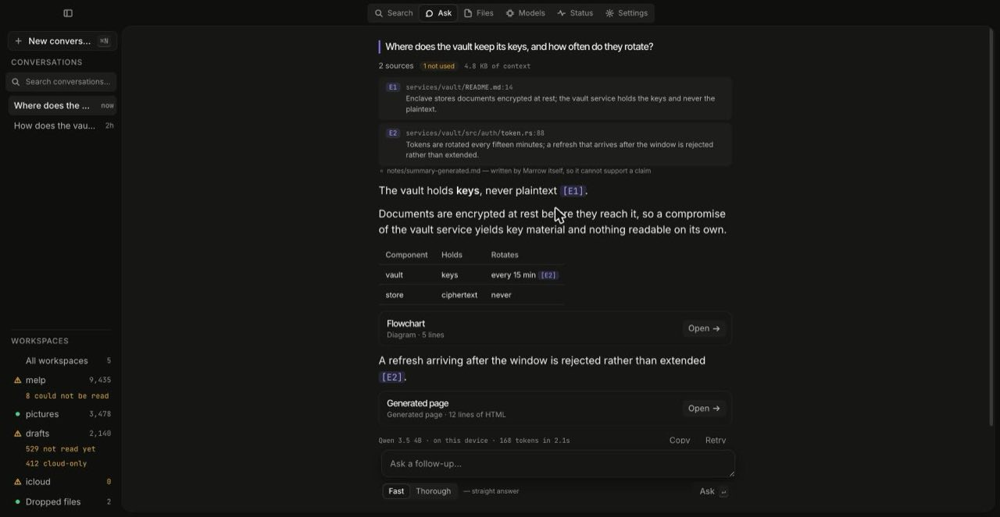
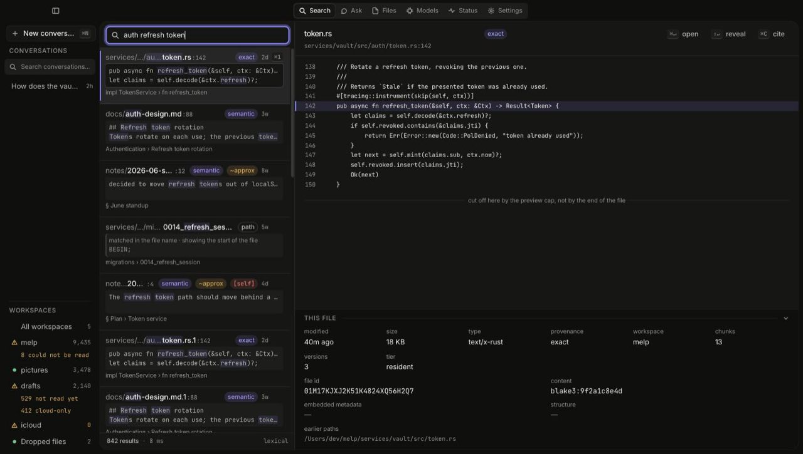
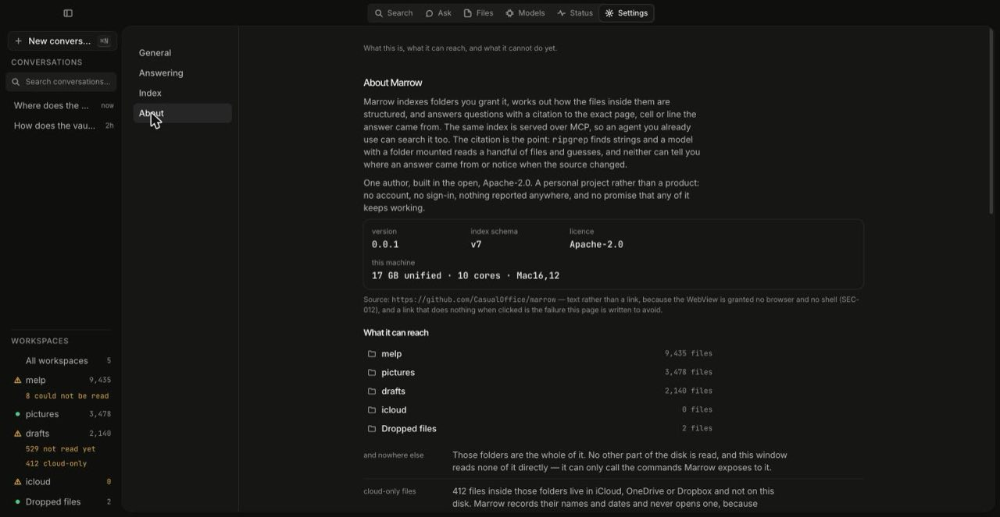

Local knowledge runtime · v0.0.3
Marrow indexes folders you grant it and answers questions with a citation to the exact page, cell or line. Search works with no model, no GPU and no network. Everything stays on your machine unless you configure a provider yourself.

crates/desktop/ui/src/dev/fixtures.ts),
not anybody's real index.
Neither one can tell you where an answer came from, notice when the source changed, or keep the distinction between something you wrote and something a tool wrote for you.
Marrow keeps a provenance-backed index instead. Files have stable identities and path history, so a path is never an identity. Structure comes out of the file format rather than being inferred from the text. Every fragment carries the location it came from. The model is replaceable; the index is the part worth keeping.
Two rules carry the design. Deterministic before probabilistic — get facts from the file format, the AST and the filesystem before asking a model to infer them. And policy below the model — text inside a file is data even when it contains instructions, so it can never grant a tool authority.
Plenty of tools fuse a keyword branch with a vector branch and rerank the result. Marrow does too, and that is not a differentiator — claiming it would be the sort of overstatement this project keeps a bug file about. Three things are unusual, and they are the reason to use it:
exact, degraded or approximate.
A number recovered from a smudged scan does not get quoted with the
confidence of one read out of a clean spreadsheet.
origin = SELF. Anything Marrow's own
tools wrote is marked at write time and excluded from evidence, so the
system cannot cite its own summary back to you as independent
corroboration. If you later edit that file yourself, it becomes yours
again and regains citability.
Three front ends over one core: a desktop app, a marrow
command line, and an MCP server on stdio for the agent you already use.
Click a source in an answer and the file opens in whatever application owns it. Shift-click reveals it in Finder instead. The citation keeps its line, page or cell — that is the part that makes it a citation rather than a filename.
Keyword and filename search need no model, no GPU and no network. That is a hard rule of the project, not a fallback path. Meaning-based search is strictly additive and its absence is never an error.
CSV, Markdown, HTML, XLSX and DOCX come back as a grid with typed values, a span for every cell, and a header row that is inferred and reported with a confidence rather than assumed.
marrow table sum — also mean,
min, max and count — adds up a
spreadsheet range from the typed values the parser recorded, and says
which cells it skipped and why.
PDF text arrives with per-character boxes through PDFKit. Text inside an image is read with Vision, with a box for every line. A PDF with low text yield is flagged as probably scanned, never silently dropped.
marrow mcp exposes thirteen tools on stdio to Claude Code,
Codex, Cursor or anything else that speaks MCP. It is an adapter: it
computes nothing the CLI cannot also reach.

exact,
semantic or path — and rows whose provenance is
degraded or approximate say so. The row marked [self] was
written by Marrow and is ranked down accordingly.
Someone with years of accumulated files on one Mac — repositories, contracts, spreadsheets, scanned paperwork, notes — who is tired of knowing a fact is somewhere and being unable to point at it.
And someone who already lives in an agent front end and would rather
give it a real index than mount a folder and hope. marrow mcp
is a first-class surface, not an afterthought.
This is a personal, open-source project by one author, built in the open
and used daily. There is no company behind it, no account, no
telemetry, and no promise that any of it keeps working. Version
v0.0.3 is genuinely the fourth release, and the first two
of those could not be opened on a Mac that had not built them.
The distinction between the two lists is the point. The left column is permanent; the right column is a to-do list.
search tool. It reaches the desktop app and marrow search --semantic; MCP is keyword-only because a stdio server has to start instantly
The tracker is the state, not the specification. The repository holds about 8,700 lines of design across nine parts, and the spec runs ahead of the build almost everywhere. If you want to know whether something exists, read TRACKER.md and BUGS.md, not the spec.
Apple Silicon only, unsigned, and both facts explained rather than glossed. Includes checksum verification.
Install Marrow →Index a folder, follow a citation to its source, wire it into an agent over MCP, or point it at a cloud model.
Four guides →What each document in the repository is actually for, and which one supersedes which.
Find the right document →